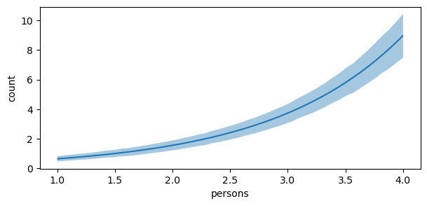
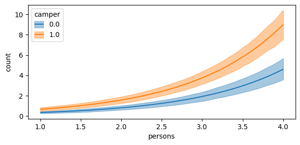
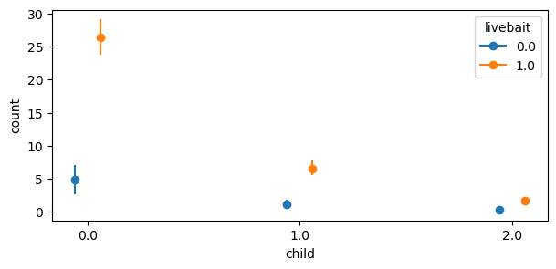

Code
import numpy as np
import pandas as pd
import bambi as bmb
from bambi.plots import plot_comparison, comparisonsIt is currently the end of week five of Google Summer of Code 2023. According to the original deliverables table outlined in my proposal, the goal was to have opened a draft PR for the core functionality of the plot_comparisons. Subsequently, week six and seven were to be spent further developing the plot_comparisons function, and writing tests and a demo notebook for the documentation, respectively. However, at the end of week five, I have a PR open with the majority of the functionality that marginaleffects has. In addition, I also exposed the comparisons function, added tests (which can and will be improved), and have started on documentation.
comparisons and plot_comparisons are a part of Bambi’s sub-package plots that feature a set of functions used to interpret complex regression models. This sub-package is inspired by the R package marginaleffects. These two functions allow the modeler to compare the predictions made by a model for different contrasts and covariate values.
Due to the link function in a GLM, there are typically three quantities of interest to interpret:
With GLMs, \(\eta\) is linear in the parameters, but non-linear in relation to the outputs \(Y\) due to the link function \(g\). Thus, as modelers, we are usually more interested in interpreting (2) and (3). For example, in logistic regression, the linear predictor is on the log-odds scale, but the response variable is on the probability scale. In Poisson regression, the linear predictor is on the log-scale, but the response variable is on the count scale. Referring back to logistic regression, a specified difference in one of the \(x\) variables does not correspond to a constant difference in the the probability of the outcome.
It is often helpful with GLMs, to the modeler and audience, to have a summary that gives the expected difference in the outcome corresponding to a unit difference in each of the input variables. Thus, the goal of comparisons and plot_comparisons is to provide the modeler with a summary and visualization of the average predicted comparisons.
Here, I adopt the notation from Chapter 14.4 of Regression and Other Stories to describe the methodology of average predicted comparisons.
Assume we have fit a Bambi model predicting an outcome \(Y\) based on inputs \(X\) and parameters \(\theta\). Consider the following scalar inputs:
\[u: \text{the input of interest}\] \[v: \text{all the other inputs}\] \[X = (u, v)\]
Suppose for the input of interest, we are interested in comparing \(u^{\text{high}}\) to \(u^{\text{low}}\) (perhaps age = \(60\) and \(40\) respectively) with all other inputs \(v\) held constant. The predictive difference in the outcome changing only \(u\) is:
\[\text{predictive difference (comparison)} = \mathbb{E}(y|u^{\text{high}}, v, \theta) - \mathbb{E}(y|u^{\text{low}}, v, \theta)\]
Selecting the maximum and minimum values of \(u\) and averaging over all other inputs \(v\) in the data gives you a new “hypothetical” dataset and corresponds to counting all pairs of transitions of \((u^\text{low})\) to \((u^\text{high})\), i.e., differences in \(u\) with \(v\) held constant.
To demonstrase how to compute and plot average predictive comparisons with comparisons and plot_comparions, we model and predict how many fish are caught by visitors at a state park. Many visitors catch zero fish, either because they did not fish at all, or because they were unlucky. We would like to explicitly model this bimodal behavior (zero versus non-zero) using a Zero Inflated Poisson model, and to compare how different inputs of interest \(u\) and other covariate values \(v\) are associated with the number of fish caught.
import numpy as np
import pandas as pd
import bambi as bmb
from bambi.plots import plot_comparison, comparisonsfish_data = pd.read_stata("http://www.stata-press.com/data/r11/fish.dta")
cols = ["count", "livebait", "camper", "persons", "child"]
fish_data = fish_data[cols]
fish_data["livebait"] = fish_data["livebait"].astype("category")
fish_data["camper"] = fish_data["camper"].astype("category")fish_model = bmb.Model(
"count ~ livebait + camper + persons + child",
fish_data,
family='zero_inflated_poisson'
)
fish_idata = fish_model.fit(
draws=1000,
target_accept=0.95,
random_seed=1234,
chains=4
)Auto-assigning NUTS sampler...
Initializing NUTS using jitter+adapt_diag...
Multiprocess sampling (4 chains in 4 jobs)
NUTS: [count_psi, Intercept, livebait, camper, persons, child]
Sampling 4 chains for 1_000 tune and 1_000 draw iterations (4_000 + 4_000 draws total) took 4 seconds.In both plot_comparisons and comparisons, \(u\) and \(v\) are represented by contrast and conditional, respectively. Lets say we are interested in comparing the number of fish caught for livebait = [0, 1] conditional on the number of people.
fig, ax = plot_comparison(
model=fish_model,
idata=fish_idata,
contrast="livebait",
conditional="persons",
)
fig.set_size_inches(7, 3)
By default, if no value is passed with contrast, then the mean or mode is computed (depending on the data type used to fit the model) as the contrast value. As live bait is category data type and no value was passed, the contrast value is [0, 1]. By default, comparisons compares \(u^\text{high}\) to \(u^\text{low}\). Thus, in this example, \(u^\text{high}\) = 1 and \(u^\text{low}\) = 0. The plot shows us that comparing a group of two people who used live bait and no live bait, the expected difference in the number of fish caught is about \(2\). As the number of people in the group increases, the expected difference also increases.
We can call comparisons directly to view a summary dataframe that includes the term \(u\) and its contrast, the specified conditional covariate, and the expected difference in the outcome with the uncertainty interval (by default the 94% highest density interval is computed). We see that camper and child are also in the summary dataframe. This is because for unspecified covariates, comparisons and plot_comparisons computes a default value (mean or mode based on the data type of the covariate). Thus, \(v\) = persons, camper, child.
comparisons_df = comparisons(
model=fish_model,
idata=fish_idata,
contrast="livebait",
conditional="persons",
)
comparisons_df.head(10)| term | contrast | persons | camper | child | estimate | hdi_0.03% | hdi_0.97% | |
|---|---|---|---|---|---|---|---|---|
| 0 | livebait | (0.0, 1.0) | 1.000000 | 1.0 | 0.684 | 0.654667 | 0.483362 | 0.838686 |
| 1 | livebait | (0.0, 1.0) | 1.061224 | 1.0 | 0.684 | 0.690484 | 0.512999 | 0.883717 |
| 2 | livebait | (0.0, 1.0) | 1.122449 | 1.0 | 0.684 | 0.728266 | 0.544810 | 0.930400 |
| 3 | livebait | (0.0, 1.0) | 1.183674 | 1.0 | 0.684 | 0.768122 | 0.583730 | 0.984383 |
| 4 | livebait | (0.0, 1.0) | 1.244898 | 1.0 | 0.684 | 0.810164 | 0.607509 | 1.024170 |
| 5 | livebait | (0.0, 1.0) | 1.306122 | 1.0 | 0.684 | 0.854514 | 0.642664 | 1.076049 |
| 6 | livebait | (0.0, 1.0) | 1.367347 | 1.0 | 0.684 | 0.901299 | 0.695035 | 1.146263 |
| 7 | livebait | (0.0, 1.0) | 1.428571 | 1.0 | 0.684 | 0.950652 | 0.737713 | 1.206457 |
| 8 | livebait | (0.0, 1.0) | 1.489796 | 1.0 | 0.684 | 1.002716 | 0.758100 | 1.245945 |
| 9 | livebait | (0.0, 1.0) | 1.551020 | 1.0 | 0.684 | 1.057638 | 0.825102 | 1.332072 |
Furthermore, conditional is not limited to one covariate. We can pass a list of covariates to condition on. For example, we can also include camper.
fig, ax = plot_comparison(
model=fish_model,
idata=fish_idata,
contrast="livebait",
conditional=["persons", "camper"],
)
fig.set_size_inches(7, 3)
Evaluating average predictive comparisons at central values for the conditional covariates \(v\) can be problematic when the inputs have a large variance since no single central value (mean, median, etc.) is representative of the covariate. This is especially true when \(v\) exhibits bi or multimodality. Thus, it may be desireable to use the empirical distribution of \(v\) to compute the predictive comparisons, and then average over a specific or set of covariates to obtain the average predictive comparisons. To achieve unit level contrasts, do not pass a parameter into conditional and or specify None.
unit_level = comparisons(
model=fish_model,
idata=fish_idata,
contrast="livebait",
conditional=None,
)
# empirical distribution
print(unit_level.shape[0] == fish_model.data.shape[0])
unit_level.head(10)True| term | contrast | camper | child | persons | estimate | hdi_0.03% | hdi_0.97% | |
|---|---|---|---|---|---|---|---|---|
| 0 | livebait | (0.0, 1.0) | 0.0 | 0.0 | 1.0 | 0.868743 | 0.634292 | 1.121583 |
| 1 | livebait | (0.0, 1.0) | 1.0 | 0.0 | 1.0 | 1.700244 | 1.307142 | 2.120623 |
| 2 | livebait | (0.0, 1.0) | 0.0 | 0.0 | 1.0 | 0.868743 | 0.634292 | 1.121583 |
| 3 | livebait | (0.0, 1.0) | 1.0 | 1.0 | 2.0 | 1.011327 | 0.760836 | 1.249259 |
| 4 | livebait | (0.0, 1.0) | 0.0 | 0.0 | 1.0 | 0.868743 | 0.634292 | 1.121583 |
| 5 | livebait | (0.0, 1.0) | 1.0 | 2.0 | 4.0 | 1.454320 | 0.961899 | 1.947773 |
| 6 | livebait | (0.0, 1.0) | 0.0 | 1.0 | 3.0 | 1.236932 | 0.899355 | 1.543456 |
| 7 | livebait | (0.0, 1.0) | 0.0 | 3.0 | 4.0 | 0.188411 | 0.090118 | 0.288605 |
| 8 | livebait | (0.0, 1.0) | 1.0 | 2.0 | 3.0 | 0.607264 | 0.395854 | 0.826614 |
| 9 | livebait | (0.0, 1.0) | 1.0 | 0.0 | 1.0 | 1.700244 | 1.307142 | 2.120623 |
Since the empirical distrubution is used for computing the average predictive comparisons, the same number of rows (250) is returned as the data used to fit the model. To average over a covariate, use the average_by argument. If True is passed, then comparisons averages over all covariates. Else, if a single or list of covariates are passed, then comparisons averages by the covariates passed.
# marginalize over all covariates
comparisons(
model=fish_model,
idata=fish_idata,
contrast="livebait",
conditional=None,
average_by=True
)| term | contrast | estimate | hdi_0.03% | hdi_0.97% | |
|---|---|---|---|---|---|
| 0 | livebait | (0.0, 1.0) | 3.657341 | 2.99057 | 4.344358 |
# average by number of persons
comparisons(
model=fish_model,
idata=fish_idata,
contrast="livebait",
conditional=None,
average_by="persons"
)| term | contrast | persons | estimate | hdi_0.03% | hdi_0.97% | |
|---|---|---|---|---|---|---|
| 0 | livebait | (0.0, 1.0) | 1.0 | 1.379314 | 1.047445 | 1.735029 |
| 1 | livebait | (0.0, 1.0) | 2.0 | 1.969410 | 1.559249 | 2.374562 |
| 2 | livebait | (0.0, 1.0) | 3.0 | 3.709952 | 3.076369 | 4.364713 |
| 3 | livebait | (0.0, 1.0) | 4.0 | 7.369520 | 6.112693 | 8.669469 |
# average by number of persons and camper
comparisons(
model=fish_model,
idata=fish_idata,
contrast="livebait",
conditional=None,
average_by=["persons", "camper"]
)| term | contrast | persons | camper | estimate | hdi_0.03% | hdi_0.97% | |
|---|---|---|---|---|---|---|---|
| 0 | livebait | (0.0, 1.0) | 1.0 | 0.0 | 0.868743 | 0.634292 | 1.121583 |
| 1 | livebait | (0.0, 1.0) | 1.0 | 1.0 | 1.700244 | 1.307142 | 2.120623 |
| 2 | livebait | (0.0, 1.0) | 2.0 | 0.0 | 1.430712 | 1.095632 | 1.784995 |
| 3 | livebait | (0.0, 1.0) | 2.0 | 1.0 | 2.350440 | 1.887173 | 2.791573 |
| 4 | livebait | (0.0, 1.0) | 3.0 | 0.0 | 2.438080 | 1.902601 | 2.976076 |
| 5 | livebait | (0.0, 1.0) | 3.0 | 1.0 | 4.451878 | 3.761067 | 5.174751 |
| 6 | livebait | (0.0, 1.0) | 4.0 | 0.0 | 3.551448 | 2.698365 | 4.379869 |
| 7 | livebait | (0.0, 1.0) | 4.0 | 1.0 | 10.751241 | 9.136812 | 12.468829 |
It is still possible to use plot_comparisons when passing an argument to average_by. In the plot below, the empirical distribution is used to compute unit level contrasts for livebait and then averaged over persons to obtain the average predictive comparisons. The plot below is similar to the second plot in this notebook. The differences being that: (1) a pairwise transition grid is defined for the second plot above, whereas the empirical distribution is used in the plot below, and (2) in the plot below, we marginalized over the other covariates in the model (thus the reason for not having a camper group, and a reduction in the uncertainty interval).
fig, ax = plot_comparison(
model=fish_model,
idata=fish_idata,
contrast="livebait",
conditional=None,
average_by="persons"
)
fig.set_size_inches(7, 3)
The modeller can also pass their own values for contrast and conditional by using a dictionary where the key, value pairs are the covariate and value(s) to use. For example, if we wanted to compare the number of fish caught for \(4\) versus \(1\) persons conditional on a range of child and livebait values, we would pass the following dictionary. However, the user is not limited to passing a list for the values. A np.array can also be used.
fig, ax = plot_comparison(
model=fish_model,
idata=fish_idata,
contrast={"persons": [1, 4]},
conditional={"child": [0, 1, 2], "livebait": [0, 1]},
)
fig.set_size_inches(7, 3)
Notably, comparing \(4\) to \(1\) persons given \(0\) children and using livebait, the expected difference is about \(26\) fish. When not using livebait, the expected difference decreases substantially to about \(5\) fish. Using livebait with a group of people is associated with a much larger expected difference in the number of fish caught. Oh, and don’t bring children fishing if you have plans to catch dinner.
Users can also perform comparisons on multiple contrast values. For example, if we wanted to compare the number of fish caught between \((1, 2)\), \((1, 4)\), and \((2, 4)\) persons conditional on a range of values for child and livebait.
comparisons(
model=fish_model,
idata=fish_idata,
contrast={"persons": [1, 2, 4]},
conditional={"child": [0, 1, 2], "livebait": [0, 1]}
)| term | contrast | child | livebait | camper | estimate | lower_0.03% | upper_0.97% | |
|---|---|---|---|---|---|---|---|---|
| 0 | persons | (1, 2) | 0.0 | 0.0 | 1.0 | 0.527627 | 0.295451 | 0.775465 |
| 1 | persons | (1, 4) | 0.0 | 0.0 | 1.0 | 2.883694 | 2.605690 | 3.177685 |
| 2 | persons | (2, 4) | 0.0 | 0.0 | 1.0 | 0.131319 | 0.067339 | 0.195132 |
| 3 | persons | (1, 2) | 0.0 | 1.0 | 1.0 | 0.717965 | 0.592968 | 0.857893 |
| 4 | persons | (1, 4) | 0.0 | 1.0 | 1.0 | 0.032960 | 0.015212 | 0.052075 |
| 5 | persons | (2, 4) | 0.0 | 1.0 | 1.0 | 0.180270 | 0.123173 | 0.244695 |
| 6 | persons | (1, 2) | 1.0 | 0.0 | 1.0 | 4.834472 | 2.563472 | 7.037150 |
| 7 | persons | (1, 4) | 1.0 | 0.0 | 1.0 | 26.423188 | 23.739729 | 29.072748 |
| 8 | persons | (2, 4) | 1.0 | 0.0 | 1.0 | 1.202003 | 0.631629 | 1.780965 |
| 9 | persons | (1, 2) | 1.0 | 1.0 | 1.0 | 6.571943 | 5.469275 | 7.642248 |
| 10 | persons | (1, 4) | 1.0 | 1.0 | 1.0 | 0.301384 | 0.143676 | 0.467608 |
| 11 | persons | (2, 4) | 1.0 | 1.0 | 1.0 | 1.648417 | 1.140415 | 2.187190 |
| 12 | persons | (1, 2) | 2.0 | 0.0 | 1.0 | 4.306845 | 2.267097 | 6.280005 |
| 13 | persons | (1, 4) | 2.0 | 0.0 | 1.0 | 23.539494 | 20.990931 | 26.240169 |
| 14 | persons | (2, 4) | 2.0 | 0.0 | 1.0 | 1.070683 | 0.565931 | 1.585718 |
| 15 | persons | (1, 2) | 2.0 | 1.0 | 1.0 | 5.853978 | 4.858957 | 6.848519 |
| 16 | persons | (1, 4) | 2.0 | 1.0 | 1.0 | 0.268423 | 0.124033 | 0.412274 |
| 17 | persons | (2, 4) | 2.0 | 1.0 | 1.0 | 1.468147 | 1.024800 | 1.960934 |
Notice how the contrast \(u\) varies while the covariates \(v\) are held constant. Currently, however, plotting multiple contrast values can be difficult to interpret since the contrast is “abstracted” away onto the y-axis. Thus, it would be difficult to interpret which portion of the plot corresponds to which contrast value. This is something I am still working on.
Overall, solid progress has been made with comparisons and plot_comparisons to give the Bambi modeller insights into GLMs. One of the most difficult aspects to program is the building of the contrast dataframe (the output above) as it requires tedious shape handling to ensure the predictive comparisons are “mapped” to the correct contrast and conditional values. Writing better tests to ensure shapes are correct is something I am also working on. Additionally, there are still “nice to have” features such as: